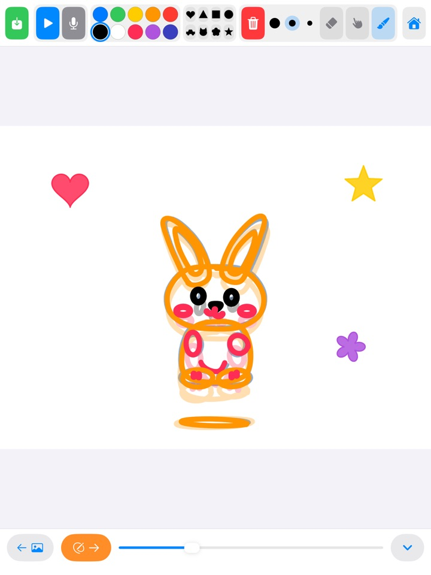
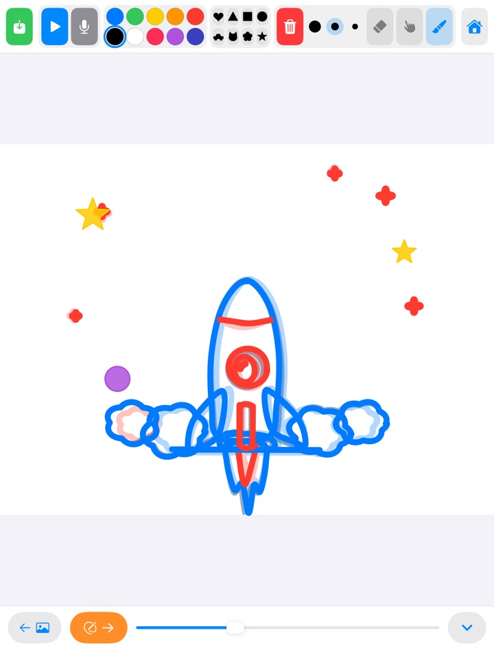
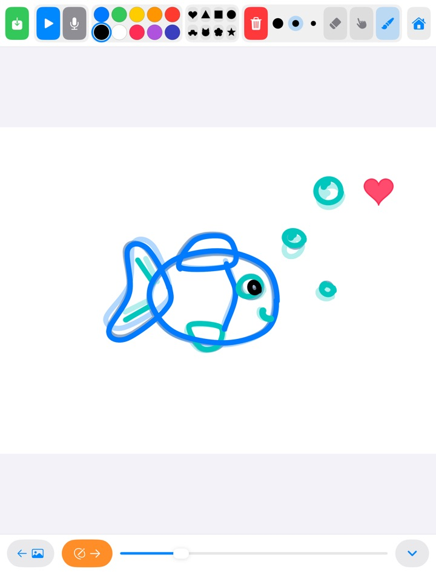
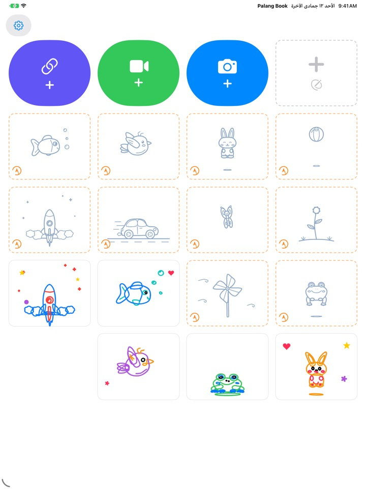

تتبّع الخطوط.
وشاهدها تتحرك.
يتتبّع طفلك رسمة باهتة صفحةً بعد صفحة. يضغط تشغيل فتختفي الرسمة الإرشادية ولا يبقى إلا خطوطه وهي تتحرك. كل زر صورة، فيستطيع أن يفعل ذلك وحده قبل أن يتعلم القراءة.
لأجهزة iPad. ثلاث مجموعات تتبّع مجانية.

ارسم بضع صفحات
ارسم شيئًا، ثم اضغط السهم البرتقالي للانتقال إلى الصفحة التالية. ستظهر الصفحة السابقة خفيفةً تحتها. بعد صفحتين أو ثلاث، اضغط زر التشغيل الأزرق.
أليس من المؤسف أن تبقى رسمة جميلة ساكنة؟
الرسوم المتحركة تعني رسم الصورة نفسها تقريبًا مرة بعد مرة مع تغييرات صغيرة، والطفل وحده لا يعرف من أين يبدأ. يضع Palang Book رسمة إرشادية باهتة فيها الحركة جاهزة، فلا يفعل الطفل سوى أن يتبع الخط. وما إن يضغط تشغيل حتى تتحرك رسمته.
اتبع الخط، تحصل على رسوم متحركة
كرة تقفز، وأرنب يقفز، وطائر يطير، وسمكة تسبح، وزهرة تتفتح، وفراشة، وسيارة مسرعة، وصاروخ، وضفدع، ومروحة ورقية. في كل مجموعة نحو 20 صفحة إرشادية.
تظهر الصفحة السابقة خفيفةً لتسهيل رسم التالية، وعند التشغيل تختفي الرسمة الإرشادية فلا يتحرك إلا ما رسمه طفلك.

أختام وعشرة ألوان
اختم قلوبًا ودوائر ومربعات ومثلثات ونجومًا وزهورًا وسيارات وطيورًا. للأختام وللفرشاة ثلاثة أحجام لكل منهما، مع عشرة ألوان للاختيار.
الممحاة وزر التراجع يجعلان تصحيح الأخطاء سهلًا. ارسم بإصبعك أو بقلم Apple Pencil.

فوق فيديوهاتك، أو على ورق أبيض
أحضر فيديو صوّرته أو فيديو من تطبيق الصور وتتبّع فوقه. أخفِ الخلفية فلا يُعرض إلا المشاهد التي رسمتها، واحدًا بعد الآخر على ورق أبيض. وهناك أيضًا دفتر متحرك فارغ بلا أي رسمة إرشادية.
اضغط على الميكروفون لتسجيل صوت طفلك معها، ثم احفظ العمل المكتمل في الصور فيديو تشاركه مع العائلة.

ثلاث خطوات للبدء
- 1
اضغط بطاقة إرشادية
البطاقات ذات الإطار البرتقالي المنقّط في الشاشة الرئيسية للتتبّع.
- 2
ارسم ثم اقلب الصفحة
السهم البرتقالي ينقلك إلى الصفحة التالية.
- 3
اضغط تشغيل
اضغط زر التشغيل الأزرق فتتحرك الرسمة.
ماذا تفعل الأزرار
- بطاقة بإطار برتقالي منقّط
- ابدأ التتبّع
- بطاقة بإطار رمادي منقّط
- دفتر متحرك على ورق أبيض
- الكاميرا الزرقاء
- ارسم فوق فيديو تصوّره
- الفيديو الأخضر
- أحضر فيديو من الصور
- الرابط النيلي
- الصق رابط ملف فيديو
- السهم البرتقالي
- الصفحة التالية
- التشغيل الأزرق
- شغّل الرسوم المتحركة، واضغط مرة أخرى للإيقاف
- السهم المنحني
- تراجع عن آخر خط
- سلة المهملات الحمراء
- امسح الصفحة كلها (التراجع يعيدها)
- الميكروفون
- سجّل صوتًا بينما تتكرر الرسوم المتحركة
- أيقونة الفيديو
- أخفِ خلفية الفيديو (الخطوط الوردية تعني الرسم فقط)
- الحفظ الأخضر
- احفظ في الصور فيديو
لحذف عمل، اضغط مطولًا على بطاقته في الشاشة الرئيسية. تُحذف معه رسوماته وتسجيله والفيديو الذي أحضرته.
الكثير لتجربته مجانًا، والوصول الدائم إن أحببته.
مجاني
- 3 مجموعات تتبّع (الكرة، الأرنب، الزهرة)
- الاحتفاظ بـ 3 أعمال
- إحضار فيديو واحد
- دفاتر فارغة حتى 10 صفحات
- تسجيل صوت حتى 15 ثانية
- الأختام والألوان والفرش والحفظ في الصور
الوصول الدائم
- كل مجموعات التتبّع، بما فيها القادمة
- بلا حدود للأعمال والصفحات والفيديوهات ووقت التسجيل
- بلا بطاقة Palang Book في نهاية الفيديوهات المحفوظة
دفعة واحدة وليست اشتراكًا. يعمل مع المشاركة العائلية على كل أجهزة iPad في العائلة.
تنتهي الفيديوهات المحفوظة مجانًا ببطاقة Palang Book قصيرة. وإن كنت تستخدم Palang Book قبل ظهور الوصول الدائم، فكل شيء مفتوح لك من قبل.
أسئلة
كيف تعمل الرسومات الإرشادية؟
الخطوط السماوية الباهتة هي الرسمة الإرشادية. يتتبّعها طفلك، وعند الضغط على تشغيل تختفي فلا تتحرك إلا خطوطه. أكمل نحو 20 صفحة وتكتمل الرسوم المتحركة.
أريد تشغيل الرسمة وحفظها وحدها من دون الفيديو.
في مشروع فيديو، اضغط أيقونة الفيديو في شريط الأدوات العلوي حتى تصبح وردية مخططة. عندها يُعرض الرسم وحده على خلفية بيضاء عند التشغيل والحفظ. ولا تُعرض إلا المشاهد التي رسمتها، فبضع رسمات فوق مقطع طويل تصنع رسومًا متحركة قصيرة.
أين يُحفظ الفيديو المكتمل؟
اضغط زر الحفظ الأخضر في طرف شريط الأدوات فيُحفظ فيديو mp4 في تطبيق الصور. اسمح بالوصول إلى الصور في أول مرة تحفظ فيها.
كيف أضيف صوتًا؟
اضغط زر الميكروفون للتسجيل بينما تتكرر الرسوم المتحركة، ثم اضغط إيقاف للانتهاء. التسجيل مرة أخرى يحل محل السابق. ويُضاف الصوت إلى الفيديو عند الحفظ.
رابط الفيديو لا يفتح.
تحقق من اتصالك بالإنترنت، وتأكد أن العنوان يشير مباشرة إلى ملف فيديو (ينتهي بـ .mp4 أو ما يشبهه). لا يمكن فتح روابط صفحات مواقع مشاركة الفيديو. استخدم فيديوهات صنعتها بنفسك أو فيديوهات مسموحًا باستخدامها.
راحة يدي تترك علامات أثناء الرسم.
السهم المنحني يزيل آخر خط، وسلة المهملات الحمراء تمسح الصفحة كلها (والتراجع يعيدها). وإن تكرر ذلك كثيرًا، راسلنا وسنساعدك.
لماذا يظهر سؤال حسابي قبل شاشة الشراء؟
حتى لا يصل الأطفال إلى شاشة الشراء وحدهم. عندما يضغط الطفل شيئًا مقفلًا يظهر قفل كبير مع طلب عرضه على شخص كبير، ولا تُفتح شاشة الشراء إلا بعد أن يجيب الكبير عن مسألة ضرب.
كيف أستعيد مشترياتي؟
اضغط الترس في أعلى الشاشة الرئيسية، واختر الوصول الدائم، وأجب عن سؤال الكبار، ثم اضغط استعادة المشتريات. يجب أن تكون مسجّل الدخول بحساب Apple نفسه الذي اشتريت به.
كيف أرسل ملاحظاتي من التطبيق؟
اضغط الترس في الشاشة الرئيسية واختر إرسال الملاحظات. يمكنك إرفاق لقطة شاشة، وترك اسم وبريد إلكتروني إن أردت ردًا. نرجو أن يرسل الملاحظات أحد الوالدين.
هل تجمعون أي معلومات عن طفلي؟
لا. لا يجمع Palang Book أي معلومات شخصية، وتبقى الرسومات والتسجيلات على جهاز iPad لديك. التفاصيل في سياسة الخصوصية.
لديك سؤال أو مشكلة؟ راسلنا على leeo@kakao.com. نرد عادةً خلال يومين إلى ثلاثة أيام.